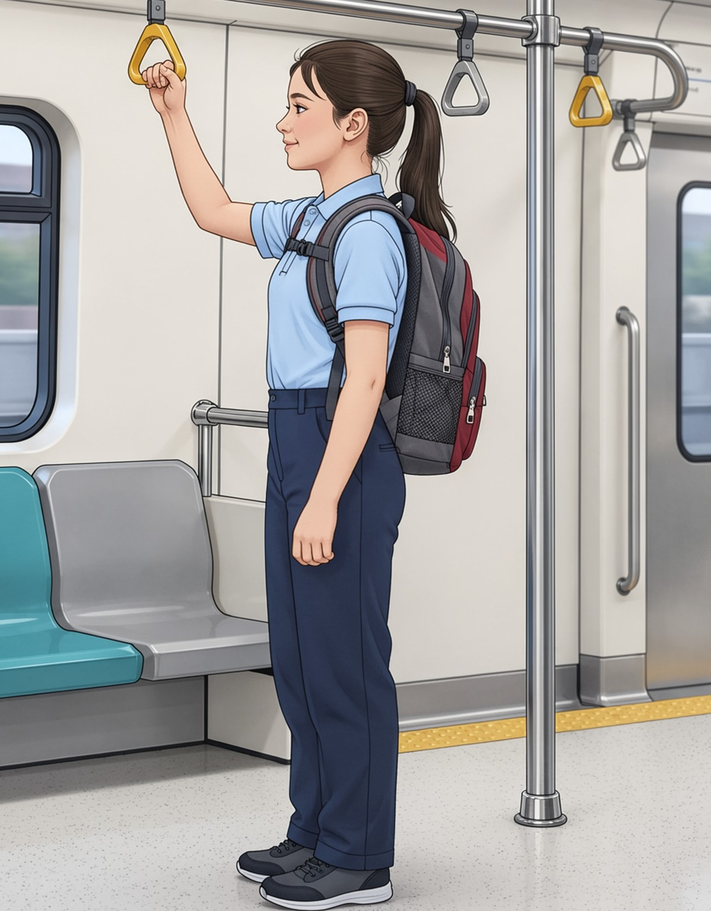

Zeynep okula metroyla gidiyor. Vagonda ayakta duruyor ve tavandaki tutamağa tutunuyor. Tren düz ve yatay bir rayda ilerliyor. Zeynep'in kütlesi 50 kg'dır. Zeynep yolculuk boyunca vagonda kaymıyor, trenle birlikte hareket ediyor.
Trenin bir istasyondan kalkıp sonraki istasyonda durana kadarki hız-zaman grafiği aşağıda verilmiştir.
a) Grafiğe göre hangi zaman aralığında trene etki eden net kuvvet sıfırdır?
b) 0-10 s aralığında Zeynep'e etki eden yatay net kuvvetin büyüklüğü kaç N'dur? Yönü nedir?
a) Net kuvvet sıfırsa ivme de sıfırdır ve hız değişmez (I. yasa).
Grafikte hız yalnızca 10-40 s aralığında sabittir.
Bu aralıkta trene etki eden net kuvvet sıfırdır.
b) Önce trenin ivmesini bulalım. Zeynep trenle birlikte hareket ettiği için onun ivmesi de aynıdır.
II. yasayı yazalım:
Tren hızlandığı için net kuvvet hareket yönündedir.
Tren 40-45 s aralığında fren yaparak duruyor.
Buna göre bu aralıkta Zeynep'e etki eden yatay net kuvvetin büyüklüğü ve yönü aşağıdakilerden hangisidir?
| Büyüklük (N) | Yön | |
|---|---|---|
| A) | 50 | Hareket yönünde |
| B) | 50 | Harekete zıt |
| C) | 100 | Hareket yönünde |
| D) | 100 | Harekete zıt |
| E) | 250 | Harekete zıt |
Fren sırasında Zeynep öne doğru savrulduğunu hissediyor. Üç arkadaş bu yolculukla ilgili şunları söylüyor:
Buna göre hangi öğrencilerin söyledikleri doğrudur?
Tren 0-10 s aralığında hızlanırken tutamak, Zeynep'in eline ileri doğru bir kuvvet uyguluyor.
Bu sırada Zeynep'in eliyle tutamağa uyguladığı kuvvet için aşağıdakilerden hangisi doğrudur?
| Büyüklüğü (tutamağın Zeynep'e uyguladığı kuvvete göre) | Yönü | |
|---|---|---|
| A) | Daha küçük | Geriye doğru |
| B) | Eşit | Geriye doğru |
| C) | Eşit | İleriye doğru |
| D) | Daha büyük | İleriye doğru |
| E) | Daha büyük | Geriye doğru |